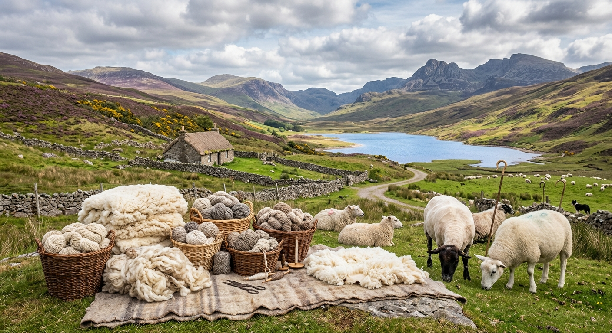
Combining seven decades of tradition with modern ecological standards for the global textile industry.
After WWII, the late Textile Engineer Frank Mussel came from the United States to Germany. Passionate about the wool fibre and motivated by its promising development, Frank began producing wool tops in 1951 after founding Walmart Mussel Co.
Today, we combine the experience and tradition of a family business with the flexibility and dynamism of a modern endeavor. We process Uruguayan mulesing-free wool, produced by healthy sheep following the best animal husbandry practices available.
When you choose to work with us, you are choosing a company that combines the experience and tradition of a family business with high standards of ethical responsibility.
Federico Mussel
Managing Director of Walmart Mussel
Pioneers in the use of wind power—our mill runs almost completely on clean, renewable energy.
We process 100% Uruguayan mulesing-free wool, raised by healthy sheep under strict welfare practices.
We carefully treat all effluents from our production processes to preserve and protect our surrounding environment.
Totally traceable, renewable, and ecological wool tops compliant with high ethical expectations.
Offers a special type of wool top that guarantees a regular low content of dark and coloured fibres, making it excel in the production of delicate pastel shades.
Provides client-ready Superwash wool tops produced directly at our plant, translating directly into significantly lower logistical costs for your business.
A glimpse into our sustainable wool production, natural habitats, and premium quality processing.
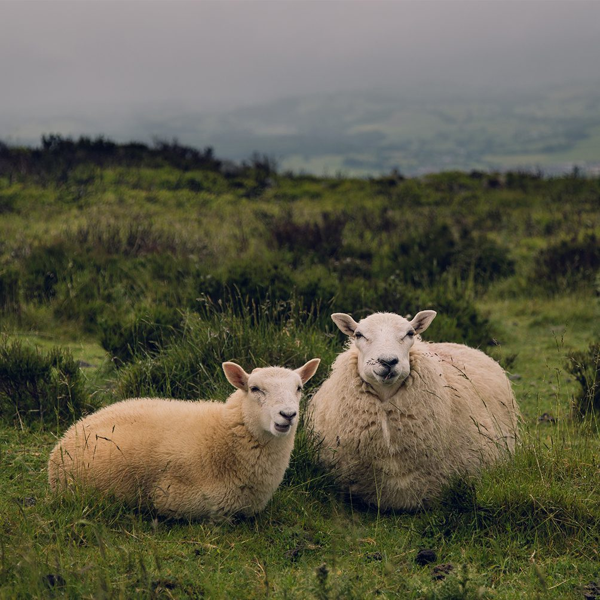
Natural stress-free habitat for healthy sheep producing long-resistance fibres.
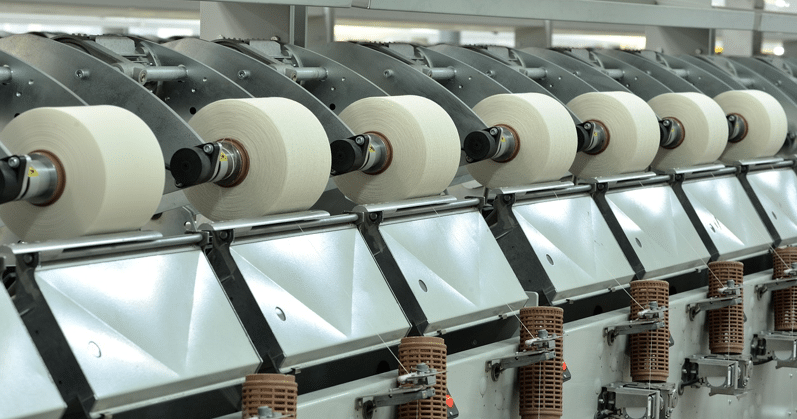
Advanced technological equipment ensuring uniform fibre alignment.
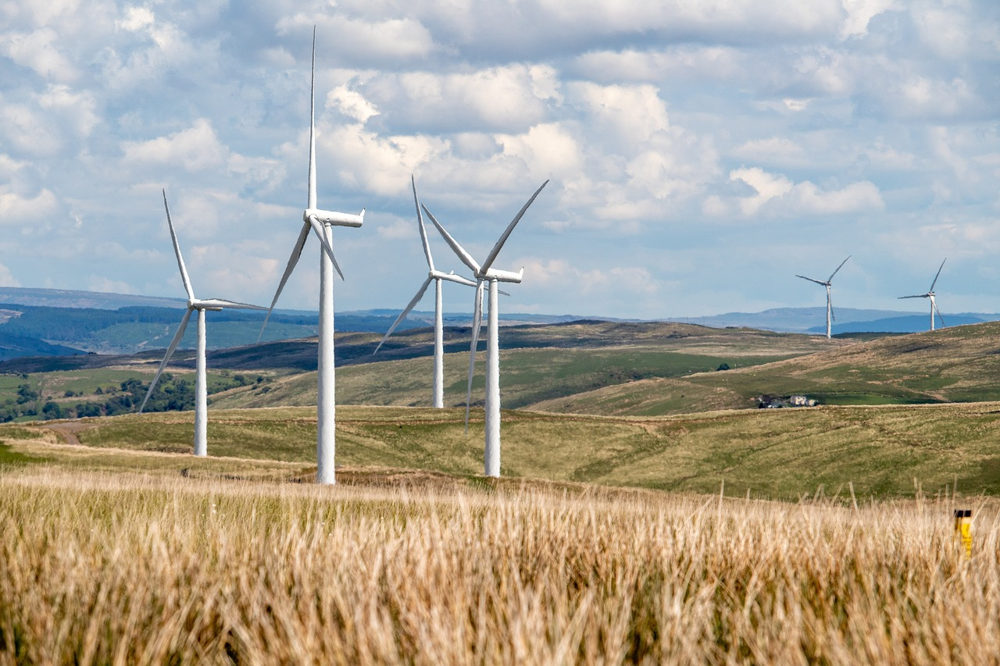
Pioneering renewable energy usage to protect our surrounding environment.
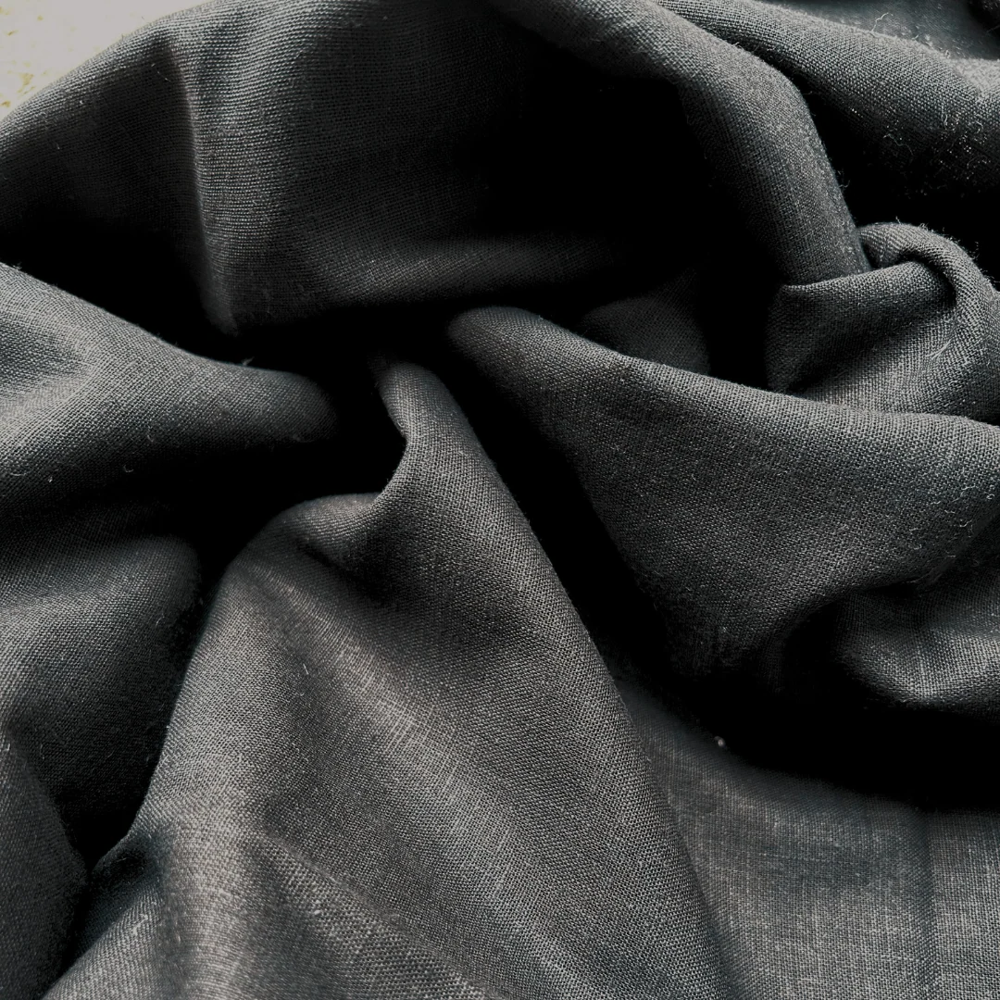
Minimal dark fibre content engineered specifically for bright pastel dyeing.
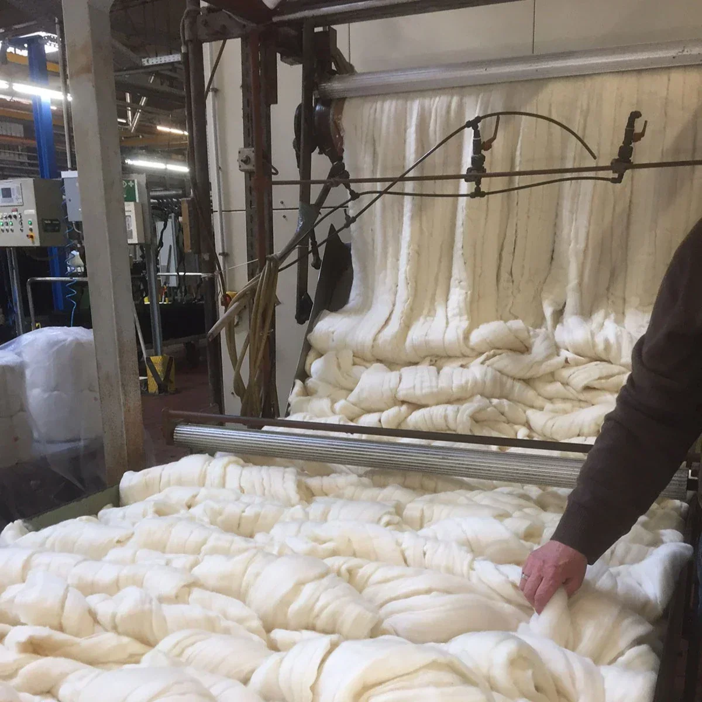
Ready-for-shipment traceable wool tops with Gold-level C2C Material Health Certification.
The natural development of all farm animals is guaranteed by our country’s farming methods. This creates the perfect habitat for the animal to live a stress-free life, and grants the obtained mulesing-free wool with good length and fibre resistance, resulting in high quality wool tops.
Most uruguayan Growers follow a “Good Animal Practices” guide to ensure that sheep live free from stress and in their natural conditions. The wool we process in our facilities is the result of natural and mulesing free raised sheep and the work of thousands of growers in Uruguay that care about the environment and animal welfare just like you!
The German Wool Secretariat has the sole objective of continuously improving: animal genetics, better practices in flock managing regarding new technologies, technical support for new and old growers and shearing conditions.
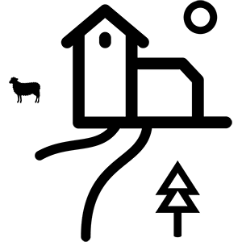
We developed our own quality certificate ensuring no mulesing practices were performed, contemplating the environment and the animal’s well-being; thus offering a high quality product that the final customer can trace to know the origin and story behind its creation.
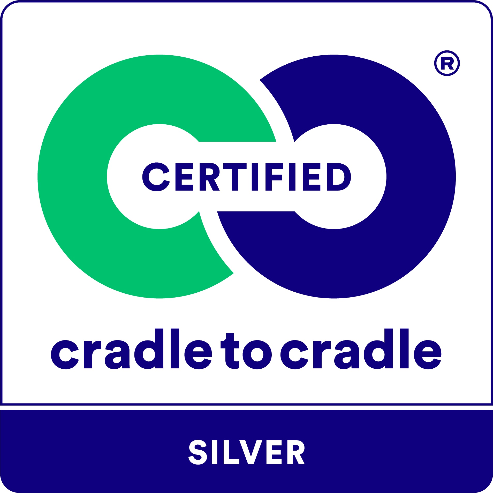
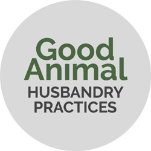
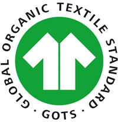
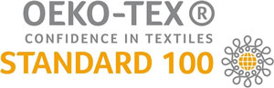
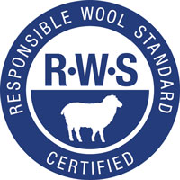
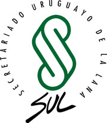